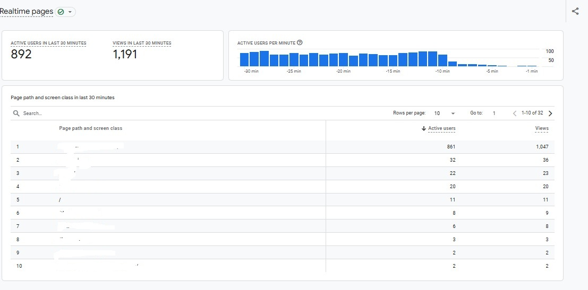

A confidential education brand needed to reach prospective students before they searched for the institution by name. The campaign focused on earning non-branded visibility and turning relevant organic demand into admission enquiries.
- Confidential education client with a 1.5-year engagement.
- Comprehensive student-centric content and SEO strategy.
- SEO managed independently alongside one content writer.
- More than 2,400 organic admission leads generated.
Project overview
An education brand focused on student admissions.
Strategy, implementation and ongoing refinement.
Reach students beyond existing brand awareness.
Turn relevant organic demand into enquiries.
The challenge: reach students before the brand search
The client needed more prospective students to discover its educational offering through subject, course, career and admission-related searches. Depending only on branded queries would limit reach to people who already knew the institution.
The work therefore needed to address the complete search journey: identify student questions, create useful content, improve page relevance, build external authority and provide clear paths from organic visits to admission enquiries.
The central challenge was to turn student search behavior into discoverability, trust and measurable admission demand.
The SEO strategy
Student-centric content
Planned comprehensive content around student questions, course intent, careers and admission decisions.
On-page optimization
Improved relevance, structure, search presentation and alignment between content and student intent.
Off-page support
Used external SEO activities to strengthen discovery, relevance and the website’s authority profile.
Google News approval
Prepared the publishing setup and secured approval for an additional content-discovery channel.
How the campaign was executed
- Mapped the student search journey.
Research identified questions and content needs across awareness, course comparison and admission stages.
- Built a comprehensive content direction.
The SEO plan guided one content writer toward useful, student-focused topics with clear search intent.
- Applied on-page and off-page SEO.
Page-level improvements and external activities worked together to expand non-branded visibility.
- Secured Google News approval.
The additional publishing channel supported broader and more timely content discovery.
- Used analytics and AI-assisted workflows.
SEO data and suitable AI tools supported research, quality control, prioritization and ongoing refinement.
The results
The campaign generated more than 2,400 organic admission leads over the engagement. The following GA4 figures represent a focused six-month reporting period within the project.
Qualified search visibility produced substantial website activity.
A meaningful share of organic visits interacted with the website.
Analytics captured activity connected to important user actions.
The student-centric search strategy supported a measurable pipeline of admission enquiries during the engagement.
| Metric | Six-month result | What it indicates |
|---|---|---|
| Organic users | 82,737 | Search-led audience reach |
| Organic sessions | 107,925 | Volume of organic visits |
| Engaged sessions | 65,950 | Meaningful website interactions |
| User events | 614,335 | Tracked on-site activity |
| Key events | 29,190 | Important configured actions |
| Session key-event rate | 13.67% | Sessions producing a key event |
| Bounce rate | 38.89% | Sessions without deeper engagement |
Realtime demand evidence
The attached GA4 screenshot captures a separate realtime moment during the project. It supports the scale of live website activity but is not presented as the source of the six-month totals above.

The realtime screenshot verifies a high-activity moment. The six-month totals and 2,400+ admission leads come from the broader project reporting supplied for this case study.
Tools and team
Google Search Console
Non-branded visibility, queries, clicks and indexing.
Google Analytics 4
Organic acquisition, engagement and key events.
Google Trends
Changing student interests and content demand.
AnswerThePublic
Student questions and topic discovery.
Screaming Frog
Technical and on-page review.
AI-assisted tools
Research, workflow support and quality control.
Subhajyoti independently led SEO strategy and implementation while guiding one content writer on student-focused content priorities.
Frequently asked questions
What was the main objective?
The objective was to grow non-branded organic traffic and convert prospective-student demand into admission enquiries.
How many organic admission leads were generated?
The campaign generated more than 2,400 organic admission leads during the 1.5-year engagement.
Which activities supported the result?
The strategy combined student-centric content, on-page SEO, off-page SEO, Google News approval, analytics and AI-assisted workflows.
How was the project team structured?
Subhajyoti independently managed SEO strategy and execution while working alongside one content writer.